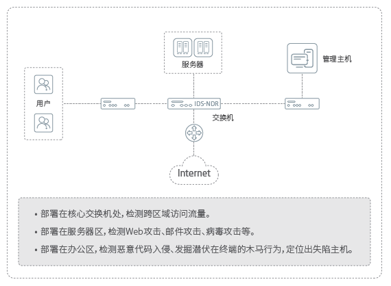

产品概述
NDR是赛博特安网络安全最新开发的具有自主版权的高级威胁检测系统，利用独创的数据包截取技术对网络进行不间断的监控，扩大网络防御的纵深，同时采用先进的基于网络数据流实时智能分析技术判断来自网络内部和外部的入侵企图，进行报警、响应和防范。NDR可分布式旁路部署于网络关键节点处，对原有网络业务“零”干扰，通过主动防御技术，可有效高级威胁攻击，系统中的分析模块提供威胁溯源与取证能力，帮助安全专家从海量安全事件中快速定位威胁。赛博特安NDR产品支持与态势感知平台的对接，实现威胁从检测到响应的闭环处理。
应用价值
提升网络威胁检测能力
避免单一产品只能检测某方面的威胁，NDR一体化检测引擎，全面发现网络威胁，精确定位威胁事件，并能够发现未知威胁。
提升威胁溯源能力
全时间维度的威胁线索数据，通过简单关联分析，可帮助安全专家快速溯源攻击事件。
安全事件闭环处理的能力
NDR可将威胁线索传递给安全管理平台，赋能安全管理平台实现全面的网络流量安全管控。
产品亮点
深度流量分析的能力
支持3000种应用协议，支持SSL流量解密，对HTTP、FTP、DNS、SMTP、IMAP、POP等协议进行深度识别，可还原协议数据，包括文件等内容。
全面的威胁检测能力
具备L2到L7层的威胁检测能力，包括：覆盖多种攻击特征并内置杀毒引擎，可针对网络病毒、蠕虫、间谍软件、木马后门等恶意流量进行检测；支持敏感数据发现；通过AI算法，能够对流量中的异常行为（包括内部向外部发起、内部对内部发起）进行检测，并对基于ICMP、DNS、HTTP的隐蔽隧道做深入检测；能够对NMap、Metasploit等常见黑客工具的扫描行为进行检测；可有效检测暴力破解行为，包括针对常见的数据库、应用服务器等服务弱口令的爆破行为；针对常见OWASP web攻击进行检测，并能对主流的web黑客工具进行识别。
溯源分析
NDR通过将网络层日志、传输层日志、应用层日志、威胁日志进行关联，可有效帮助安全运维人员查找安全事件上下文，快速发现安全问题并做出决策。
安全事件响应
通过自定义时段报表、系统告警、Syslog和SNMP Trap外发数据等方式，及时向管理员告警， 支持与第三方安全运营管理平台联动， 通过API接口，向第三方平台输出威胁线索，第三方平台可对威胁进行封堵。
应用场景
